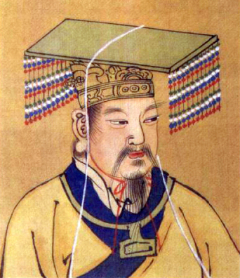

Fondator mitic al civilizației chineze
| Împăratul Galben | |
|---|---|
|
 |
|
| Nume chinez | 黄帝 (Huángdì) |
| Tip | Conducător legendar |
| Perioadă | ~2697 î.Hr. |
| Caracteristici | |
| Abilități | Înțelepciune, conducere |
| Invenții | Scris, medicină, busolă |
| Realizări | Unificarea triburilor |
| Soție | Leizu |
| Simbolism | Civilizație, ordine |
Împăratul Galben (Huangdi) este una dintre cele mai importante figuri din mitologia chineză, considerat fondatorul civilizației chineze și unul dintre cei Cinci Împărați Legendari.
Potrivit tradiției, el a domnit în jurul anului 2697 î.Hr. și a pus bazele organizării sociale, politice și culturale ale Chinei antice.
Legenda spune că Huangdi s-a născut într-o perioadă de haos și conflicte între triburi. Prin inteligență și strategie, a reușit să unească aceste triburi și să stabilească o conducere stabilă.
Una dintre cele mai cunoscute realizări ale sale este victoria împotriva lui Chiyou, într-o bătălie decisivă care i-a consolidat puterea.
Împăratul Galben este asociat cu numeroase descoperiri fundamentale pentru civilizația chineză:
Soția sa, Leizu, este creditată cu descoperirea producerii mătăsii, contribuind semnificativ la dezvoltarea economică.
Sub conducerea lui Huangdi, au fost construite drumuri și sisteme de irigații, facilitând comerțul și agricultura. Aceste reforme au pus bazele unei societăți organizate.
Împăratul Galben simbolizează înțelepciunea, ordinea și progresul. El este venerat ca un erou cultural și un simbol al identității chineze.
Lucrarea Huangdi Neijing (Canonul Intern al Împăratului Galben) este una dintre cele mai importante surse ale medicinei tradiționale chineze.
Site făcut de
Ursulescu Florin-Alexandru, cl. XII-a A, Liceul Atanasie Marienescu